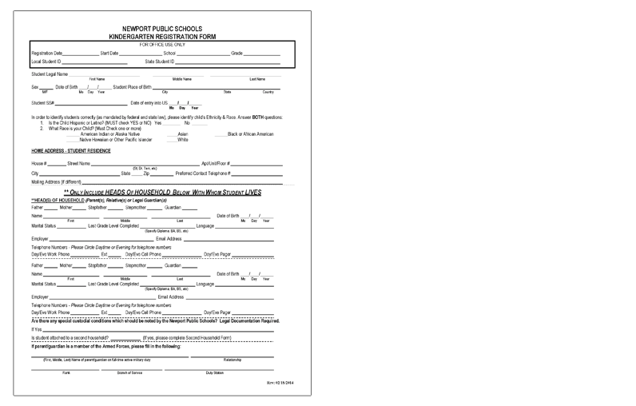

Overview
The State of Rhode Island wanted to explore ways to bridge the digital divide and improve parent engagement with public schools.
Problem
There is a breakdown of trust between families and public schools. How can technology help make the first interaction a parent has with a school a better one?
Solution
A friendly student registration web application for K-12 public schools that lays the foundation for a trusting relationship between parents and schools.
Hypothesis
The school registration process is an opportunity to start the tone of the parent/school relationship in a positive light, especially for parents who may have felt disenfranchised during their school years.
Current process
The existing enrollment forms are dense and ask parents to fill out a lot of duplicate information.
An early solution
A fun and conversational fill-in-the-blank format inspired by Mad Libs.

The design process
As a team we followed the design thinking process: Empathize, Define, Ideate, Prototype and Test. After observing and interviewing stakeholders, government partners, librarians, and educators we started defining opportunities to later move to the ideation process. We then prototyped our solution and tested it with school administrators and parents.
Why this project?
We narrowed our 200+ ideas into six problem areas by measuring each one by:
Impact Reusability Sponsorship Team member interest Serves the underserved Feasibility Improves relationships Increase capacity Advances civic tech Transparency
Turning point in project definition
I kept the team moving forward by asking: Who's on the ground level of public schools? What challenges do they face? The answer was the school secretary.
During contextual inquiries with school secretaries,
we learned that the forms ask for a lot of personal data in a cold and confusing way.
"It's difficult to get parents to fill out all of the forms."—School District Data Manager

Some forms have been copied so many times over the years that they are impossible to read.
A chain of problems
Students left behind
When contact numbers are inaccurate, permission slips for field trips don't get signed. Individual Education Plan meetings for kids with special needs go unattended. Children don't get picked up from school.
"We’ve gone long periods of time without parent contact information hoping that nothing happens to the child." –K-12 Providence School Principal
High truancy rates
Truancy is a common problem statewide even at young ages when the parents are responsible for bringing the kids to school.
Administrators and family service coordinators told us that many parents associate bad feelings with the school system.
"School was a horrible place for a lot of our parents." –Newport Public Schools Family Service Coordinator
At this point, all three of us were emotionally invested in helping improve the relationship between parents and schools. Five months was too short for us to solve everything so we decided to move forward with student registration in hopes of making that first impression a better one.
Starting with a name
My nickname for the application—Ticket to RIDE (Rhode Island of Education)—stuck. The team liked that it made sense for school registration and incorporated two of Rhode Island residents' favorite things - acronyms and puns.
Where did the train come from?
The initial concepts were inspired by the name. What kind of ride would we take the parents on? A plane ride, a sailboat, a carnival ride, or a train?

I put together some mockups, and we aligned on the train. We wanted to test the metaphor with parents to see if it resonated with them.
"Even though I'm an adult using this, it’s fun. This is kindergarten enrollment. I like that it doesn't feel like signing up for health insurance" –Rhode Island parent during usability testing
First Iteration: from Mad Libs to convention
When we tested the conversational fill-in-the-blank format, we learned that yes and no questions were really difficult to implement.
It would be too confusing for parents so we moved forward with a conventional question/answer format.
Before

A Mad Libs design required more effort and time to move through and interpret. At least part of the sentence has to be read twice for context. This was a bad experience for a long form.
After

The conventional question and answer format lets the parent read the whole question before having to answer.
Second Iteration: guiding principles
Design principle: Predictability
I designed a multi-page form for the app so that parents would not be overwhelmed by all of the information they were asked to complete. Progress indicators give parents confidence through the process by showing them their current location, the steps they have already completed, and how many more steps they need to achieve their goal.

Design principle: Personalization
The multi-page form allowed us to capture data such as name and gender early on so that the following questions used the appropriate pronouns and headers. We received many positive responses to the way we handled questions about who the student lives with. If they answer yes to the question "Do you live with the student?" then the parent's address is assigned the address they filled in for the student. This helped resolve a common complaint we heard from parents that they had to answer the same question multiple times.

Design principle: Good feedback
When we did usability testing with school administrators in Rhode Island, we heard that having a summary screen to review the information at the end was important. Hearing this drove my decision to add "rest areas" between sections of the app so that parents would have a chance to review the information in smaller chunks and make corrections sooner than later. The narrative text was inspired by the Mad Libs approach from the early days of the project. I also designed a tabbed summary screen at the end so that all sections could be reviewed.

Project Constraints
Questionable integration
We knew that this project would be risky because a key to its success was our ability to integrate with legacy software vendors who provide student information systems.
Time
We had five months to design, build, test, iterate, ship, and find sustainability for its future in Rhode Island.
Results


Usability testing with parents in Rhode Island who had recently registered their children using the paper process.
Through multiple rounds of usability testing, we heard that parents loved the simplicity and convenience of Ticket to RIDE, and schools were excited by having cleaner data that would make getting in touch with parents easier. Unfortunately, our short time frame was not enough to maneuver through the risky choice of building software that needed to integrate with a vendor's closed legacy system.
Despite falling short of a sustainable project, I grew enormously as a researcher and designer. Lessons I learned:

Two months into the project, I gave a presentation at Code for America discussing the challenges of and opportunities for Ticket to RIDE. More about BETA, an evening of civic storytelling.